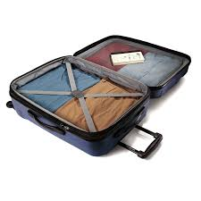

Porque viajar?
Quem viaja expande horizontes, conhece novas pessoas, novas culturas, acima de tudo novas vivências. Longe de nossa área de conforto, enfrentamos situações que nos desafiará e promoverá experiências que levaremos por toda vida. Quando estamos fora, principalmente em outro país, aprendemos a lidar com imprevistos, que não estamos acostumados; a conviver com pessoas que tiveram outro tipo de criação; uma culinária totalmente estranha ao nosso paladar habitual; além de conhecermos outras línguas e dialetos. Viajar, além de promover nossa aprendizagem , nos alimenta de novas memórias.